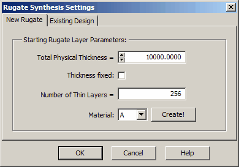
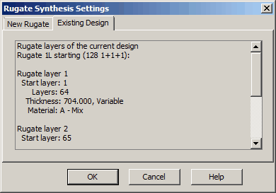
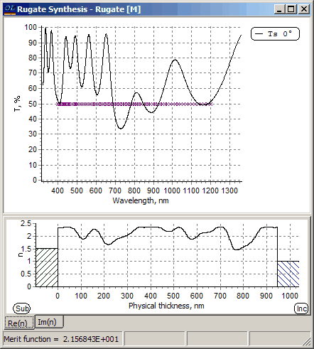
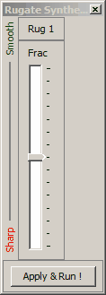
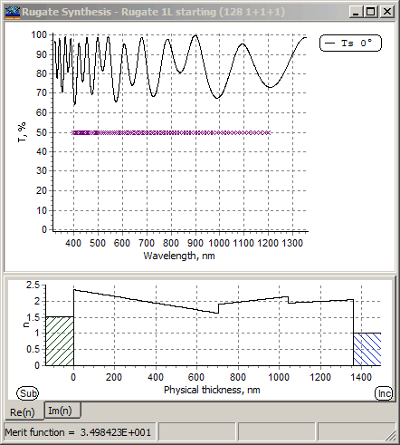
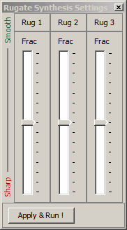

Rugate Synthesis
Rugate Synthesis
Before starting the Rugate Synthesis procedure, it is necessary to specify initial parameters. If you select the option “New Rugate,” you can enter the initial total physical thickness of the Rugate coating. The “Thickness fixed” checkbox specifies whether the thickness will change during the synthesis procedure or remain the same. The “Number of thin layers” parameter specifies how many layers will be used in the Rugate representation. This parameter is analogous to the parameter in the Rugate Analysis option.

To describe the rugate refractive index profile, it is necessary to create and load a Changeable or Changeable Composition material (Per Layer type) into memory. In the case of a Changeable material, the refractive index profile will be described directly by the corresponding values of Re(n) and/or Im(n). If using a Changeable Composition material, the refractive index profile will be described with the help of Fraction distribution. Clicking the “Create” button will launch a wizard (Create Material Assistant) to assist in creating a Changeable Composition material in the Layer Material database and loading it into memory. The Rugate Synthesis procedure will start with a constant value of Re(n) and Im(n) situated in the middle of the specified constraints (Lower Limit and Upper Limit parameters in the Layer Material Editor).
For more complex cases, the “Existing Design” option can be utilized.

This allows using a Rugate coating created with the help of Rugate Analysis as a starting point for Rugate Synthesis. Furthermore, a Rugate coating can consist of several different layers with a continuous change of refractive index, or it can even be a hybrid coating.
For these more complicated cases, starting designs should be created using the Design Editor.
The following simple rules should be used to define complicated Rugate coatings: A Rugate layer, i.e., a layer with a continuous change of refractive index is defined as follows:
It must consist of more than 31 thin layers.
The thicknesses of all thin layers inside one Rugate layer must be the same.
All thin layers must have the same abbreviation corresponding to a Changeable or Changeable Composition material with Per Layer change type. Changeable Composition must use the Average Weighted Value of Refractive Indices as a formula for refractive index calculations.
If several Rugate layers are required, it is possible to use materials with different abbreviations or assign slightly different thicknesses to thin layers inside different layers. After pressing the OK button, the Rugate Synthesis procedure will start.
.
The Rugate Synthesis window displays the current spectral characteristics. A special control window allows for the interactive control of the smoothness of the profile using slider controls. In the case of more complex layers consisting of several Rugates, the number of sliders will be adjusted accordingly, as shown below. This allows for the independent adjustment of the smoothness of each Rugate layer.
 
We recommend reading the paper dedicated to this subject: